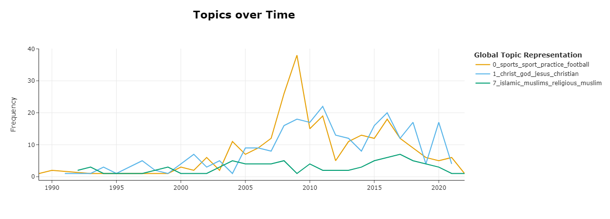

To gain individual level insights into the Mozambican economy, I apply a class-based TF-IDF procedure called BERTtopic to cluster word embeddings from the mission statements in the BDR3 (i.e. the same publication that the first two chapters of my dissertation leverage). Below are two dimensional topic representations of the tree most common entry types registered in the BDR3. I auto-translated the mission statements from portugese to english before I applied the sentiment analysis.
To illustrate how topic modeling unveils details about the mozambican society, consider the question what kind civil societies are present in the mozambican society. For simplicity, lets assume we are sport related clubs, as well as christian or muslim faith. The following graph plots the number of annually registered associations that mention one of these tree topic in their mission statement. The figure shows two trends. Did the number of annually registered sports clubs and christian communities increased over the last two decades. In contrast the formalization, i.e. documentation in the public bulletin, of muslim communities remains a stable low level through out the same period. The National Statistics Institute estimated that around 20 of mozambican citizens are Muslims.
If we link the sentiment of registered firms to national trade statics, we gain additional insights. In this example, we look import of fertilizer into Mozambique, as measured by the BACI trade dataset. BACI builds up on the United Nations Commodity Trade Statistics Database (UN Comtrade) and cross validated bilateral import and export statistics. The figure below plot with a line chart the imports of fertilizer. The histogram lists the numbers of annually registered companies that trade or produce fertilizer according to their mission statement in Mozambique between 1985 and 2021.
The figure shows that fertilizer imports skyrocketed in 2008, while the number of domestic companies that trade with fertilizer remained relatively stable before 2010. After 2010, the number of companies that trade with fertilizer increased, but the imports of fertilizer decreased to the initial import level.

Sentiment analysis of the bulletin provides not only micro level insights, it also allows to build better macro economic models. The, to my knowledge best existing measure of social activities in the Mozambican economy. The Social Accounting Matrix (SAM) of Mozambique, composed by the United Nations University World Institute for Development Economics Research (UNU-WIDER). The SAm is a static macro overview that provides a detailed representation of the Mozambican economy and separates 55 activities and commodities in 2015 and uses both data from the IMF as well as national accounts to estimate financial flows between different social and economic activities. The network graph of the SAM 2015, i.e. the most recent version has the following shape:

To study this economy on a firm, we can also consider Orbis, a corporate business intelligence database. The quality of orbis data is very heterogenous across countries. For Mozambique, the database lists around 15000 operating entities. The bar chart desegregates these companies by sector.